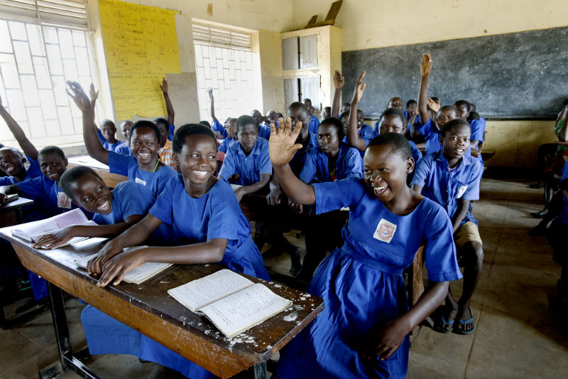

According to UNESCO, the 10 least literate countries are Chad, Guinea, South Sudan, Niger, Mali, Central African Republic, Burkina Faso, Benin, Afghanistan, and Sierra Leone. When you look at the table of data here, you can clearly see that African countries dominate the list. This is the reason why this website targets help to African countries, as huge poverty gaps remain in them and low education is a direct cause of poverty.
Education enriches a person's perspective in numerous ways. Education teaches an individual how to think, how to comprehend and understand events around them. Without education, an individual's mind is trapped in ignorance, and they would have a surprisingly little understanding of the outside world. When they do not receive education at any point in their lives, the ignorance and lack of education would be passed down to their children, and the vicious cycle continues.
Rank
Country
Percentage
1
South Sudan
27
2
Afghanistan
28.1
3
Niger
28.7
4
Burkina Faso
28.7
5
Mali
33.4
6
Chad
35.4
7
Somalia
37.8
8
Ethiopia
39.0
9
Guinea
41.0
10
Chad
42.2
Why is education and poverty related?
A study conducted by UNESCO (the UN Educational, Scientific, and Cultural Organisation) examines the correlation between poverty and the accessibility of education. Due to the high rates of children and adolescents who are out of school, or have not completed their education, the global poverty rate may not see a reduction.
According to the UNESCO Institute for Statistics (UIS), the global number of children, adolescents and youth out of school in 2015 was 264 million. From that, 61 million are children who are of primary school age. 62 million are young adolescents and 141 million are young people of upper secondary school age.
The study also shows that the majority of these out of school populations are located in poorer countries. These countries generally have lower incomes and are located in regions including Sub-Saharan Africa, Central and Southern Asia, Eastern Asia and South-eastern Asia, and Western Asia and Northern Africa. Poverty rates also have an impact on gender disparities in education, showcasing that more females than males are likely to be out of school in low-income and lower-middle income countries.
As the study itself states, low levels of education and acquisition of that education can hinder economic prosperity, which would, in turn, slow down poverty reduction. According to the study, if all adults received two more years of schooling or completed secondary school, it would lift nearly 60 million people out of poverty. The study postulates that economic growth would see an increase in their income. This could be achieved through effective education policies that address the issues of drop-out rates. Universal access to primary and secondary education is necessary to decrease the out of school rates, and therefore, decrease the poverty rate.

Test your understanding here! Each question is worth 1 point!
Quiz
1. Which continent has the least literacy?
Africa
Asia
North America
South America
2. How many children, adolescents and youth were out of school in 2015?
400 million
16 million
49 million
264 million
3. Does education have an effect on poverty?
Yes
No
Maybe
Slightly
4. What are some ways to alleviate poverty?
Enhance education
Ensure healthcare
Build infrastructure
All of the above
 Support
Resources
Learn
Support
Resources
Learn